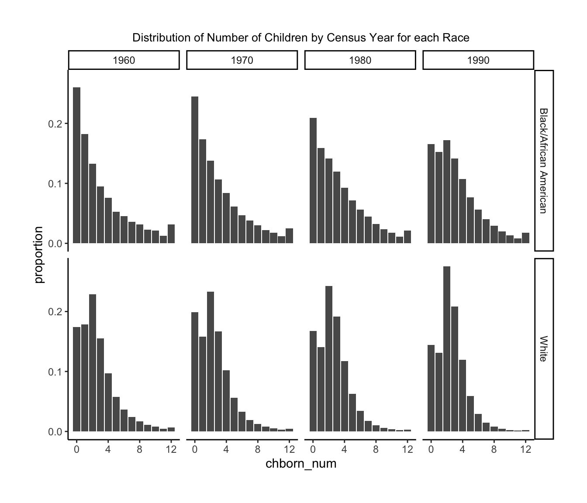
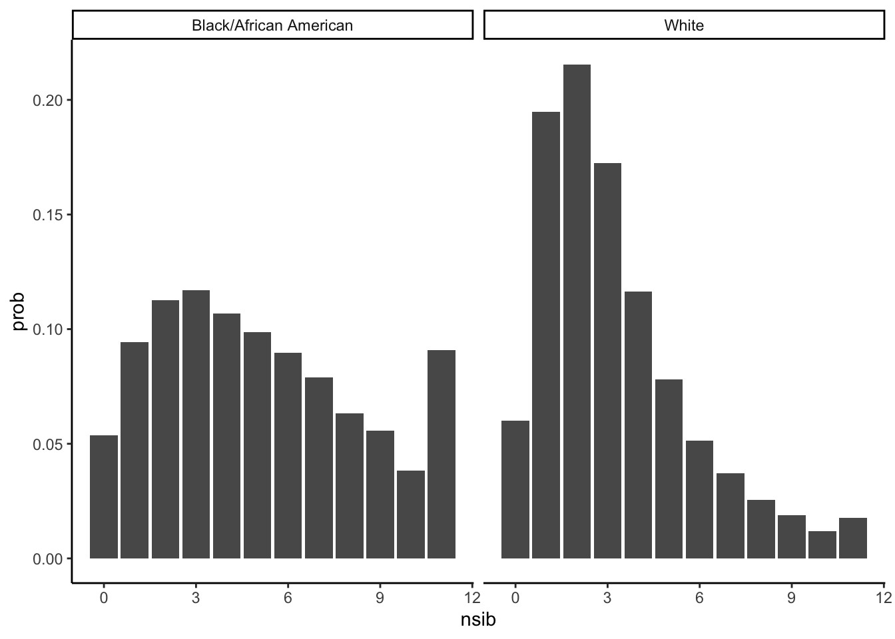
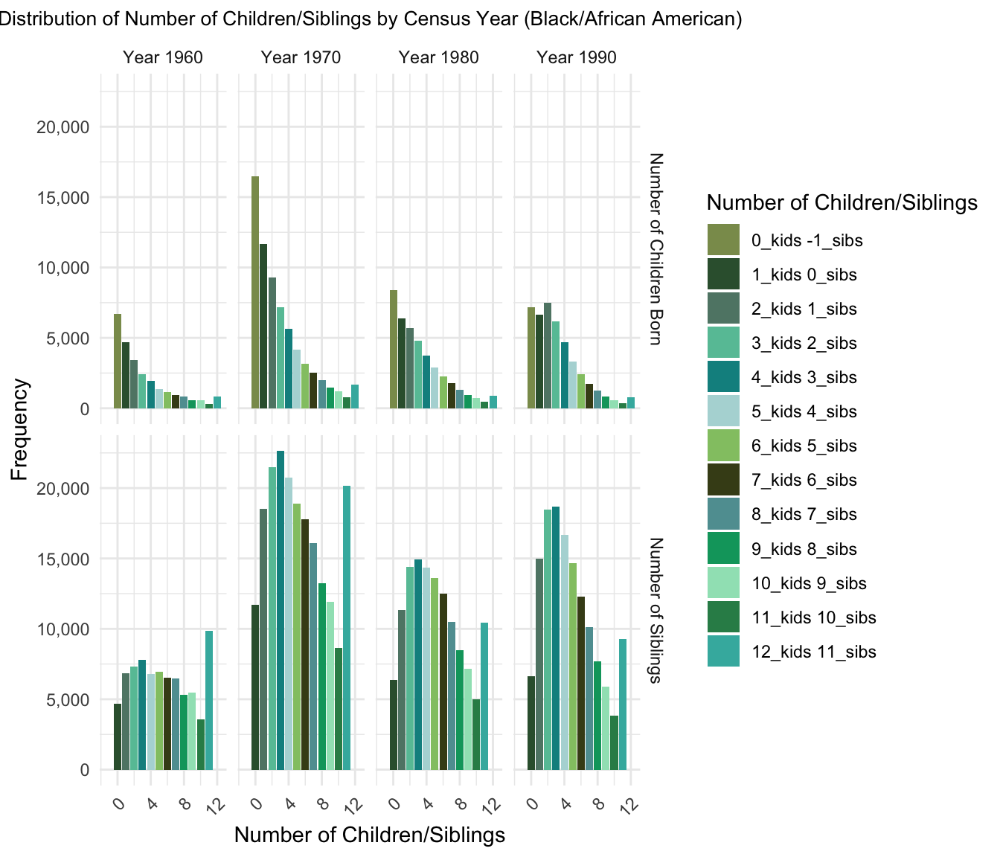
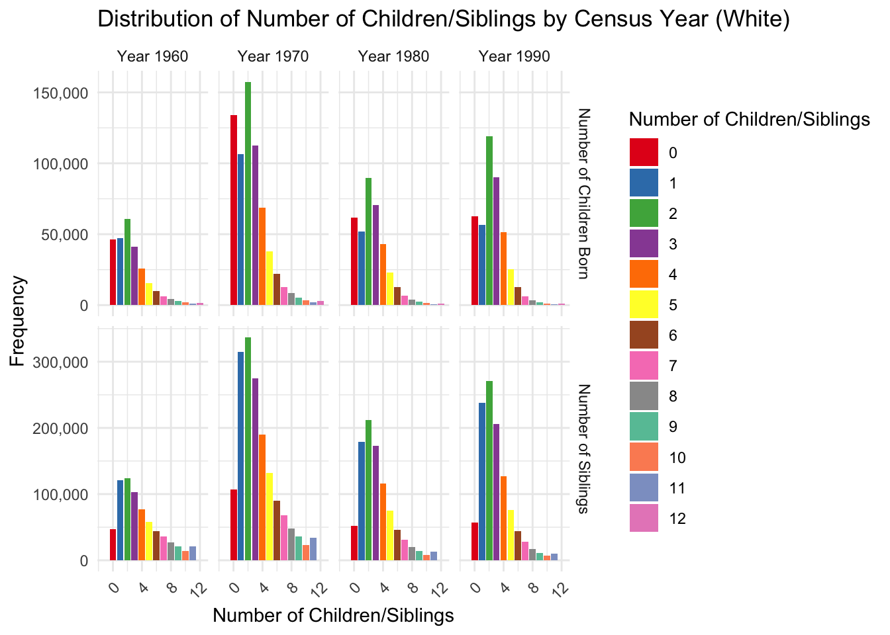
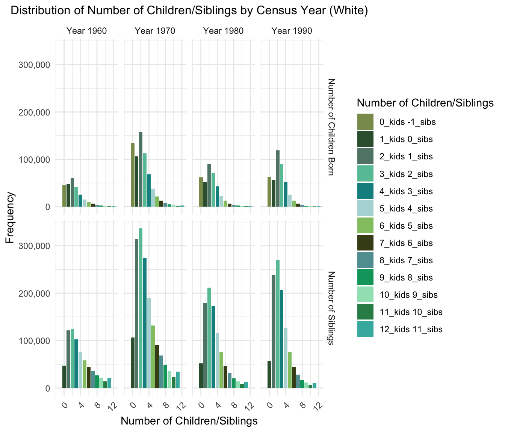
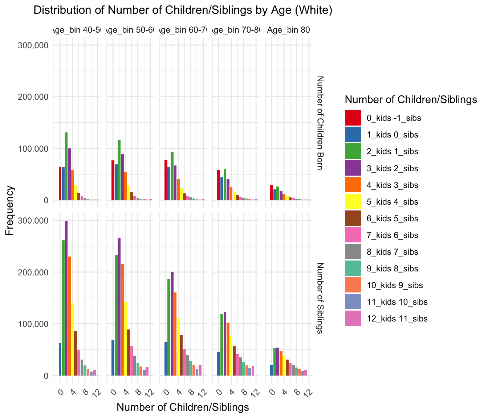

Last updated: 2024-07-12
Checks: 6 1
Knit directory: PODFRIDGE/
This reproducible R Markdown analysis was created with workflowr (version 1.7.1). The Checks tab describes the reproducibility checks that were applied when the results were created. The Past versions tab lists the development history.
The R Markdown file has unstaged changes. To know which version of
the R Markdown file created these results, you’ll want to first commit
it to the Git repo. If you’re still working on the analysis, you can
ignore this warning. When you’re finished, you can run
wflow_publish to commit the R Markdown file and build the
HTML.
Great job! The global environment was empty. Objects defined in the global environment can affect the analysis in your R Markdown file in unknown ways. For reproduciblity it’s best to always run the code in an empty environment.
The command set.seed(20230302) was run prior to running
the code in the R Markdown file. Setting a seed ensures that any results
that rely on randomness, e.g. subsampling or permutations, are
reproducible.
Great job! Recording the operating system, R version, and package versions is critical for reproducibility.
Nice! There were no cached chunks for this analysis, so you can be confident that you successfully produced the results during this run.
Great job! Using relative paths to the files within your workflowr project makes it easier to run your code on other machines.
Great! You are using Git for version control. Tracking code development and connecting the code version to the results is critical for reproducibility.
The results in this page were generated with repository version 9a85666. See the Past versions tab to see a history of the changes made to the R Markdown and HTML files.
Note that you need to be careful to ensure that all relevant files for
the analysis have been committed to Git prior to generating the results
(you can use wflow_publish or
wflow_git_commit). workflowr only checks the R Markdown
file, but you know if there are other scripts or data files that it
depends on. Below is the status of the Git repository when the results
were generated:
Ignored files:
Ignored: .DS_Store
Ignored: .Rproj.user/
Unstaged changes:
Modified: analysis/siblings_analysis.Rmd
Note that any generated files, e.g. HTML, png, CSS, etc., are not included in this status report because it is ok for generated content to have uncommitted changes.
These are the previous versions of the repository in which changes were
made to the R Markdown (analysis/siblings_analysis.Rmd) and
HTML (docs/siblings_analysis.html) files. If you’ve
configured a remote Git repository (see ?wflow_git_remote),
click on the hyperlinks in the table below to view the files as they
were in that past version.
| File | Version | Author | Date | Message |
|---|---|---|---|---|
| html | 5284e15 | linmatch | 2024-07-03 | new com |
| Rmd | 73a6b6a | linmatch | 2024-07-03 | new com |
| Rmd | 2c460cf | linmatch | 2024-07-03 | new com |
| html | 2c460cf | linmatch | 2024-07-03 | new com |
| Rmd | b71e11f | linmatch | 2024-07-03 | new com |
| html | 7e507f5 | linmatch | 2024-07-02 | new com |
| Rmd | f67a1db | linmatch | 2024-06-28 | Update siblings_analysis.Rmd |
| Rmd | 0dd5aca | linmatch | 2024-06-27 | Update siblings_analysis.Rmd |
| Rmd | a7125e6 | Tina Lasisi | 2024-06-27 | Update siblings_analysis.Rmd |
| Rmd | 5136c40 | Tina Lasisi | 2024-06-27 | Update siblings_analysis.Rmd |
| Rmd | 58d549c | Tina Lasisi | 2024-06-27 | Update text |
| Rmd | b021a16 | linmatch | 2024-06-27 | fert ana |
| Rmd | 19aab99 | linmatch | 2024-06-26 | fert dis7 |
| html | 19aab99 | linmatch | 2024-06-26 | fert dis7 |
| html | cc5fc63 | linmatch | 2024-06-26 | fert_dis6 |
| Rmd | cdc3bd0 | linmatch | 2024-06-26 | fer_dis |
| Rmd | 326ad11 | linmatch | 2024-06-26 | fert distribution |
| Rmd | 892720f | linmatch | 2024-06-23 | fert dis3 |
| Rmd | c865baa | linmatch | 2024-06-23 | fertility dis2 |
| Rmd | f2c131d | linmatch | 2024-06-23 | fertility distribution |
| html | bce5e2e | hcvw | 2024-05-27 | Build site. |
| Rmd | 332d5a2 | hcvw | 2024-05-27 | wflow_publish(c("analysis/CODIS_DB_composition.Rmd", "analysis/final_equation.Rmd", |

`summarise()` has grouped output by 'RACE'. You can override using the
`.groups` argument.
| Race | Number of Siblings | Probability |
|---|---|---|
| Black/African American | 0 | 0.0536835 |
| Black/African American | 1 | 0.0944034 |
| Black/African American | 2 | 0.1126400 |
| Black/African American | 3 | 0.1169489 |
| Black/African American | 4 | 0.1069123 |
| Black/African American | 5 | 0.0987928 |
| Black/African American | 6 | 0.0895686 |
| Black/African American | 7 | 0.0788034 |
| Black/African American | 8 | 0.0633805 |
| Black/African American | 9 | 0.0556882 |
| Black/African American | 10 | 0.0383610 |
| Black/African American | 11 | 0.0908175 |
| White | 0 | 0.0599540 |
| White | 1 | 0.1948590 |
| White | 2 | 0.2154482 |
| White | 3 | 0.1725750 |
| White | 4 | 0.1163034 |
| White | 5 | 0.0780464 |
| White | 6 | 0.0513892 |
| White | 7 | 0.0372693 |
| White | 8 | 0.0256068 |
| White | 9 | 0.0188150 |
| White | 10 | 0.0119091 |
| White | 11 | 0.0178246 |
Here, we are trying to create a frequency table to show the number of children born, the number of mother who has “chborn_num” children, the number of sibling, and the number of individuals who has “n_sib” siblings.
\[ n_{sib} = chborn_{num} - 1 \]
\[ \text{freq}_{n_{\text{sib}}} = \text{freq}_{\text{mother}} \cdot \text{chborn}_{\text{num}} \]
eg.Suppose 10 mothers (generation 0) has 7 children, then there will be 70 children (generation 1) in total who has 6 siblings.
RACE YEAR chborn_num freq_mother n_sib freq_n_sib color
1 Black/African American 1960 0 6697 -1 0 #E41A1C
2 Black/African American 1960 1 4698 0 4698 #377EB8
3 Black/African American 1960 2 3411 1 6822 #4DAF4A
4 Black/African American 1960 3 2445 2 7335 #984EA3
5 Black/African American 1960 4 1949 3 7796 #FF7F00
6 Black/African American 1960 5 1361 4 6805 #FFFF33
7 Black/African American 1960 6 1162 5 6972 #A65628
8 Black/African American 1960 7 932 6 6524 #F781BF
9 Black/African American 1960 8 810 7 6480 #999999
10 Black/African American 1960 9 588 8 5292 #66C2A5
11 Black/African American 1960 10 549 9 5490 #FC8D62
12 Black/African American 1960 11 326 10 3586 #8DA0CB
13 Black/African American 1960 12 821 11 9852 #E78AC3
14 Black/African American 1970 0 16490 -1 0 #E41A1C
15 Black/African American 1970 1 11686 0 11686 #377EB8
16 Black/African American 1970 2 9275 1 18550 #4DAF4A
17 Black/African American 1970 3 7161 2 21483 #984EA3
18 Black/African American 1970 4 5659 3 22636 #FF7F00
19 Black/African American 1970 5 4147 4 20735 #FFFF33
20 Black/African American 1970 6 3147 5 18882 #A65628
21 Black/African American 1970 7 2542 6 17794 #F781BF
22 Black/African American 1970 8 2012 7 16096 #999999
23 Black/African American 1970 9 1473 8 13257 #66C2A5
24 Black/African American 1970 10 1194 9 11940 #FC8D62
25 Black/African American 1970 11 784 10 8624 #8DA0CB
26 Black/African American 1970 12 1682 11 20184 #E78AC3
27 Black/African American 1980 0 8417 -1 0 #E41A1C
28 Black/African American 1980 1 6383 0 6383 #377EB8
29 Black/African American 1980 2 5681 1 11362 #4DAF4A
30 Black/African American 1980 3 4797 2 14391 #984EA3
31 Black/African American 1980 4 3732 3 14928 #FF7F00
32 Black/African American 1980 5 2870 4 14350 #FFFF33
33 Black/African American 1980 6 2264 5 13584 #A65628
34 Black/African American 1980 7 1782 6 12474 #F781BF
35 Black/African American 1980 8 1310 7 10480 #999999
36 Black/African American 1980 9 943 8 8487 #66C2A5
37 Black/African American 1980 10 717 9 7170 #FC8D62
38 Black/African American 1980 11 452 10 4972 #8DA0CB
39 Black/African American 1980 12 870 11 10440 #E78AC3
40 Black/African American 1990 0 7193 -1 0 #E41A1C
41 Black/African American 1990 1 6635 0 6635 #377EB8
42 Black/African American 1990 2 7485 1 14970 #4DAF4A
43 Black/African American 1990 3 6161 2 18483 #984EA3
44 Black/African American 1990 4 4673 3 18692 #FF7F00
45 Black/African American 1990 5 3333 4 16665 #FFFF33
46 Black/African American 1990 6 2445 5 14670 #A65628
47 Black/African American 1990 7 1752 6 12264 #F781BF
48 Black/African American 1990 8 1263 7 10104 #999999
49 Black/African American 1990 9 853 8 7677 #66C2A5
50 Black/African American 1990 10 590 9 5900 #FC8D62
51 Black/African American 1990 11 348 10 3828 #8DA0CB
52 Black/African American 1990 12 772 11 9264 #E78AC3
53 White 1960 0 46202 -1 0 #E41A1C
54 White 1960 1 47433 0 47433 #377EB8
55 White 1960 2 60732 1 121464 #4DAF4A
56 White 1960 3 41272 2 123816 #984EA3
57 White 1960 4 25666 3 102664 #FF7F00
58 White 1960 5 15327 4 76635 #FFFF33
59 White 1960 6 9697 5 58182 #A65628
60 White 1960 7 6347 6 44429 #F781BF
61 White 1960 8 4518 7 36144 #999999
62 White 1960 9 2990 8 26910 #66C2A5
63 White 1960 10 2148 9 21480 #FC8D62
64 White 1960 11 1280 10 14080 #8DA0CB
65 White 1960 12 1747 11 20964 #E78AC3
66 White 1970 0 133940 -1 0 #E41A1C
67 White 1970 1 106663 0 106663 #377EB8
68 White 1970 2 157405 1 314810 #4DAF4A
69 White 1970 3 112397 2 337191 #984EA3
70 White 1970 4 68603 3 274412 #FF7F00
71 White 1970 5 38000 4 190000 #FFFF33
72 White 1970 6 22023 5 132138 #A65628
73 White 1970 7 12927 6 90489 #F781BF
74 White 1970 8 8534 7 68272 #999999
75 White 1970 9 5342 8 48078 #66C2A5
76 White 1970 10 3593 9 35930 #FC8D62
77 White 1970 11 2082 10 22902 #8DA0CB
78 White 1970 12 2858 11 34296 #E78AC3
79 White 1980 0 61909 -1 0 #E41A1C
80 White 1980 1 51856 0 51856 #377EB8
81 White 1980 2 89551 1 179102 #4DAF4A
82 White 1980 3 70716 2 212148 #984EA3
83 White 1980 4 43190 3 172760 #FF7F00
84 White 1980 5 23170 4 115850 #FFFF33
85 White 1980 6 12556 5 75336 #A65628
86 White 1980 7 6589 6 46123 #F781BF
87 White 1980 8 3874 7 30992 #999999
88 White 1980 9 2254 8 20286 #66C2A5
89 White 1980 10 1368 9 13680 #FC8D62
90 White 1980 11 757 10 8327 #8DA0CB
91 White 1980 12 1073 11 12876 #E78AC3
92 White 1990 0 62471 -1 0 #E41A1C
93 White 1990 1 56647 0 56647 #377EB8
94 White 1990 2 119054 1 238108 #4DAF4A
95 White 1990 3 90170 2 270510 #984EA3
96 White 1990 4 51511 3 206044 #FF7F00
97 White 1990 5 25385 4 126925 #FFFF33
98 White 1990 6 12698 5 76188 #A65628
99 White 1990 7 6292 6 44044 #F781BF
100 White 1990 8 3479 7 27832 #999999
101 White 1990 9 1876 8 16884 #66C2A5
102 White 1990 10 1132 9 11320 #FC8D62
103 White 1990 11 623 10 6853 #8DA0CB
104 White 1990 12 828 11 9936 #E78AC3

RACE chborn_num Age_bin freq_mother n_sib freq_n_sib
1 Black/African American 0 40-50 9469 -1 0
2 Black/African American 0 50-60 10846 -1 0
3 Black/African American 0 60-70 9907 -1 0
4 Black/African American 0 70-80 5991 -1 0
5 Black/African American 0 80 2584 -1 0
6 Black/African American 1 40-50 8690 0 8690
7 Black/African American 1 50-60 8309 0 8309
8 Black/African American 1 60-70 6786 0 6786
9 Black/African American 1 70-80 3953 0 3953
10 Black/African American 1 80 1664 0 1664
11 Black/African American 2 40-50 9174 1 18348
12 Black/African American 2 50-60 7133 1 14266
13 Black/African American 2 60-70 5420 1 10840
14 Black/African American 2 70-80 2911 1 5822
15 Black/African American 2 80 1214 1 2428
16 Black/African American 3 40-50 7678 2 23034
17 Black/African American 3 50-60 5777 2 17331
18 Black/African American 3 60-70 4001 2 12003
19 Black/African American 3 70-80 2192 2 6576
20 Black/African American 3 80 916 2 2748
21 Black/African American 4 40-50 5863 3 23452
22 Black/African American 4 50-60 4653 3 18612
23 Black/African American 4 60-70 3054 3 12216
24 Black/African American 4 70-80 1661 3 6644
25 Black/African American 4 80 782 3 3128
26 Black/African American 5 40-50 4259 4 21295
27 Black/African American 5 50-60 3323 4 16615
28 Black/African American 5 60-70 2391 4 11955
29 Black/African American 5 70-80 1222 4 6110
30 Black/African American 5 80 516 4 2580
31 Black/African American 6 40-50 3095 5 18570
32 Black/African American 6 50-60 2687 5 16122
33 Black/African American 6 60-70 1803 5 10818
34 Black/African American 6 70-80 996 5 5976
35 Black/African American 6 80 437 5 2622
36 Black/African American 7 40-50 2332 6 16324
37 Black/African American 7 50-60 2023 6 14161
38 Black/African American 7 60-70 1451 6 10157
39 Black/African American 7 70-80 825 6 5775
40 Black/African American 7 80 377 6 2639
41 Black/African American 8 40-50 1669 7 13352
42 Black/African American 8 50-60 1636 7 13088
43 Black/African American 8 60-70 1149 7 9192
44 Black/African American 8 70-80 643 7 5144
45 Black/African American 8 80 298 7 2384
46 Black/African American 9 40-50 1085 8 9765
47 Black/African American 9 50-60 1170 8 10530
48 Black/African American 9 60-70 861 8 7749
49 Black/African American 9 70-80 509 8 4581
50 Black/African American 9 80 232 8 2088
51 Black/African American 10 40-50 844 9 8440
52 Black/African American 10 50-60 841 9 8410
53 Black/African American 10 60-70 735 9 7350
54 Black/African American 10 70-80 425 9 4250
55 Black/African American 10 80 205 9 2050
56 Black/African American 11 40-50 516 10 5676
57 Black/African American 11 50-60 538 10 5918
58 Black/African American 11 60-70 464 10 5104
59 Black/African American 11 70-80 274 10 3014
60 Black/African American 11 80 118 10 1298
61 Black/African American 12 40-50 968 11 11616
62 Black/African American 12 50-60 1112 11 13344
63 Black/African American 12 60-70 1061 11 12732
64 Black/African American 12 70-80 668 11 8016
65 Black/African American 12 80 336 11 4032
66 White 0 40-50 63463 -1 0
67 White 0 50-60 76528 -1 0
68 White 0 60-70 77238 -1 0
69 White 0 70-80 58261 -1 0
70 White 0 80 29032 -1 0
71 White 1 40-50 63238 0 63238
72 White 1 50-60 68858 0 68858
73 White 1 60-70 64498 0 64498
74 White 1 70-80 45087 0 45087
75 White 1 80 20918 0 20918
76 White 2 40-50 131141 1 262282
77 White 2 50-60 116440 1 232880
78 White 2 60-70 93330 1 186660
79 White 2 70-80 59718 1 119436
80 White 2 80 26113 1 52226
81 White 3 40-50 99738 2 299214
82 White 3 50-60 88944 2 266832
83 White 3 60-70 66651 2 199953
84 White 3 70-80 41169 2 123507
85 White 3 80 18053 2 54159
86 White 4 40-50 57565 3 230260
87 White 4 50-60 53793 3 215172
88 White 4 60-70 40166 3 160664
89 White 4 70-80 25589 3 102356
90 White 4 80 11857 3 47428
91 White 5 40-50 28227 4 141135
92 White 5 50-60 28366 4 141830
93 White 5 60-70 22377 4 111885
94 White 5 70-80 15367 4 76835
95 White 5 80 7545 4 37725
96 White 6 40-50 14389 5 86334
97 White 6 50-60 14849 5 89094
98 White 6 60-70 13114 5 78684
99 White 6 70-80 9537 5 57222
100 White 6 80 5085 5 30510
101 White 7 40-50 7101 6 49707
102 White 7 50-60 8218 6 57526
103 White 7 60-70 7425 6 51975
104 White 7 70-80 5990 6 41930
105 White 7 80 3421 6 23947
106 White 8 40-50 3803 7 30424
107 White 8 50-60 4786 7 38288
108 White 8 60-70 4859 7 38872
109 White 8 70-80 4359 7 34872
110 White 8 80 2598 7 20784
111 White 9 40-50 2128 8 19152
112 White 9 50-60 2698 8 24282
113 White 9 60-70 3078 8 27702
114 White 9 70-80 2875 8 25875
115 White 9 80 1683 8 15147
116 White 10 40-50 1214 9 12140
117 White 10 50-60 1728 9 17280
118 White 10 60-70 2103 9 21030
119 White 10 70-80 1935 9 19350
120 White 10 80 1261 9 12610
121 White 11 40-50 665 10 7315
122 White 11 50-60 974 10 10714
123 White 11 60-70 1145 10 12595
124 White 11 70-80 1242 10 13662
125 White 11 80 716 10 7876
126 White 12 40-50 846 11 10152
127 White 12 50-60 1390 11 16680
128 White 12 60-70 1762 11 21144
129 White 12 70-80 1579 11 18948
130 White 12 80 929 11 11148
color
1 #E41A1C
2 #E41A1C
3 #E41A1C
4 #E41A1C
5 #E41A1C
6 #377EB8
7 #377EB8
8 #377EB8
9 #377EB8
10 #377EB8
11 #4DAF4A
12 #4DAF4A
13 #4DAF4A
14 #4DAF4A
15 #4DAF4A
16 #984EA3
17 #984EA3
18 #984EA3
19 #984EA3
20 #984EA3
21 #FF7F00
22 #FF7F00
23 #FF7F00
24 #FF7F00
25 #FF7F00
26 #FFFF33
27 #FFFF33
28 #FFFF33
29 #FFFF33
30 #FFFF33
31 #A65628
32 #A65628
33 #A65628
34 #A65628
35 #A65628
36 #F781BF
37 #F781BF
38 #F781BF
39 #F781BF
40 #F781BF
41 #999999
42 #999999
43 #999999
44 #999999
45 #999999
46 #66C2A5
47 #66C2A5
48 #66C2A5
49 #66C2A5
50 #66C2A5
51 #FC8D62
52 #FC8D62
53 #FC8D62
54 #FC8D62
55 #FC8D62
56 #8DA0CB
57 #8DA0CB
58 #8DA0CB
59 #8DA0CB
60 #8DA0CB
61 #E78AC3
62 #E78AC3
63 #E78AC3
64 #E78AC3
65 #E78AC3
66 #E41A1C
67 #E41A1C
68 #E41A1C
69 #E41A1C
70 #E41A1C
71 #377EB8
72 #377EB8
73 #377EB8
74 #377EB8
75 #377EB8
76 #4DAF4A
77 #4DAF4A
78 #4DAF4A
79 #4DAF4A
80 #4DAF4A
81 #984EA3
82 #984EA3
83 #984EA3
84 #984EA3
85 #984EA3
86 #FF7F00
87 #FF7F00
88 #FF7F00
89 #FF7F00
90 #FF7F00
91 #FFFF33
92 #FFFF33
93 #FFFF33
94 #FFFF33
95 #FFFF33
96 #A65628
97 #A65628
98 #A65628
99 #A65628
100 #A65628
101 #F781BF
102 #F781BF
103 #F781BF
104 #F781BF
105 #F781BF
106 #999999
107 #999999
108 #999999
109 #999999
110 #999999
111 #66C2A5
112 #66C2A5
113 #66C2A5
114 #66C2A5
115 #66C2A5
116 #FC8D62
117 #FC8D62
118 #FC8D62
119 #FC8D62
120 #FC8D62
121 #8DA0CB
122 #8DA0CB
123 #8DA0CB
124 #8DA0CB
125 #8DA0CB
126 #E78AC3
127 #E78AC3
128 #E78AC3
129 #E78AC3
130 #E78AC3

R version 4.3.2 (2023-10-31)
Platform: x86_64-apple-darwin20 (64-bit)
Running under: macOS Monterey 12.7.4
Matrix products: default
BLAS: /Library/Frameworks/R.framework/Versions/4.3-x86_64/Resources/lib/libRblas.0.dylib
LAPACK: /Library/Frameworks/R.framework/Versions/4.3-x86_64/Resources/lib/libRlapack.dylib; LAPACK version 3.11.0
locale:
[1] en_US.UTF-8/en_US.UTF-8/en_US.UTF-8/C/en_US.UTF-8/en_US.UTF-8
time zone: America/New_York
tzcode source: internal
attached base packages:
[1] stats graphics grDevices utils datasets methods base
other attached packages:
[1] scales_1.3.0 knitr_1.45 viridis_0.6.5 viridisLite_0.4.2
[5] lubridate_1.9.3 forcats_1.0.0 stringr_1.5.1 dplyr_1.1.4
[9] purrr_1.0.2 tidyr_1.3.1 tibble_3.2.1 ggplot2_3.4.4
[13] tidyverse_2.0.0 readr_2.1.5 workflowr_1.7.1
loaded via a namespace (and not attached):
[1] sass_0.4.8 utf8_1.2.4 generics_0.1.3 stringi_1.8.3
[5] hms_1.1.3 digest_0.6.34 magrittr_2.0.3 timechange_0.3.0
[9] evaluate_0.23 grid_4.3.2 fastmap_1.1.1 rprojroot_2.0.4
[13] jsonlite_1.8.8 processx_3.8.3 whisker_0.4.1 gridExtra_2.3
[17] ps_1.7.6 promises_1.2.1 httr_1.4.7 fansi_1.0.6
[21] jquerylib_0.1.4 cli_3.6.2 rlang_1.1.3 munsell_0.5.0
[25] withr_3.0.0 cachem_1.0.8 yaml_2.3.8 tools_4.3.2
[29] tzdb_0.4.0 colorspace_2.1-0 httpuv_1.6.14 vctrs_0.6.5
[33] R6_2.5.1 lifecycle_1.0.4 git2r_0.33.0 fs_1.6.3
[37] pkgconfig_2.0.3 callr_3.7.3 pillar_1.9.0 bslib_0.6.1
[41] later_1.3.2 gtable_0.3.4 glue_1.7.0 Rcpp_1.0.12
[45] highr_0.10 xfun_0.41 tidyselect_1.2.1 rstudioapi_0.15.0
[49] farver_2.1.1 htmltools_0.5.7 labeling_0.4.3 rmarkdown_2.25
[53] compiler_4.3.2 getPass_0.2-4